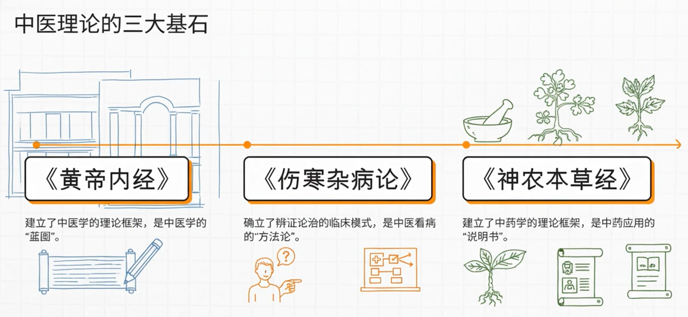
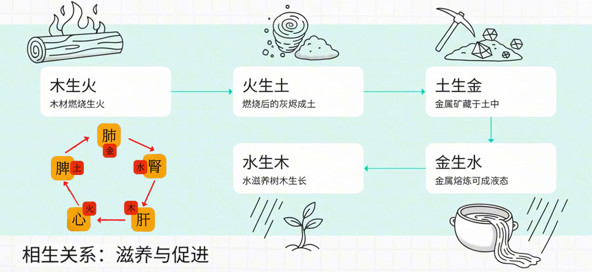
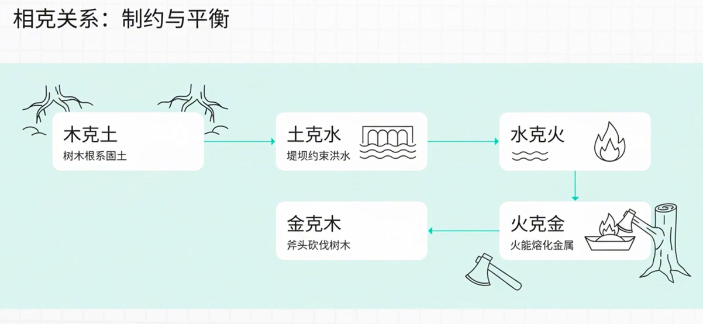

- 中医学本质上是文化医学，天文医学，是建立在中国传统文化基础上的一种医学体系。中医的伟大，体现在它深邃的思想，以及对生命极具特色的理解角度。西医会细分为肝病专家、肾病专家...等等，但中医却是健康学家，中医关注的是人的整体，它的视角更大。这就是中医的第一个特点：整体观念。（天人合一）。当病人患有目赤肿痛时，中医并不只是给些眼药水，而是给病人清泻肝火，甚至是调和脾胃，因为肝不疏则影响脾胃，这是一个大系统。
- 中医的研究对象不是西医解剖学的生理系统，而是另一个看不见却真实存在的系统，中医称之为“藏象”系统，是潜藏在我们身体里的另一种生命结构。所以中医是藏象医学，藏象的核心是五藏，也就是心肝脾肺肾。但这里的器官名称跟解剖学中的器官并不对应，五藏在功能上要大于解剖学中的五脏。如内经论述心时，它除了心生血，心主脉似乎与我们的心脏相同外，其它功能一概不同，或者说从功能上完全是两回事，因为它们分属于两个不同的系统，所以当中医说左肝右肺，跟解剖系统中肝的位置并不对应，就不奇怪了。
- 中医的第二个特点：辨证论治。中医治病，眼光更多是落实到那个“证”上，而不仅仅是病的名称。
- 以感冒为例：风寒证，风热证 → 同病异治
- 中医的智慧，就是教我们怎么去理解和顺应自己身体的自然规律。
 中医理论的三大经典与三大基石
中医理论的三大经典与三大基石
《黄帝内经》、《伤寒杂病论》和《神农本草经》是中医理论三大经典，它们共同构成了中医理论的核心框架。中医理论的三大基石（阴阳五行、脏腑经络、病因病机）是理论内核，而三大经典则是承载和阐述这些基石的具体载体。
《黄帝内经》系统构建了"阴阳五行"学说，用以解释人体生理病理，详细记载了脏腑功能和经络循行，奠定了藏象学说基础。
《伤寒杂病论》提出了“六经辨证”体系，分析外感病病因病机；《神农本草经》则阐述了药物性味归经，为病因治疗提供依据。

对立制约
是阴阳学说的核心理论范畴，指属性相反的阴阳双方在统一体内通过相互排斥、抑制形成动态平衡的机制。该理论包含阴阳属性对立与制约平衡两个维度：前者体现为寒热、昼夜等自然现象的矛盾特性，后者表现为相互消长调节的稳态维持功能。阴阳通过这种对立统一关系推动气候变化、生命活动等物质运动形式，当制约失衡时则引发疾病状态。中医理论将其应用于阐释人体生理病理机制，并以"阴平阳秘"作为健康状态的判别标准。
互根互用
阴阳二者既相互对立，又相互依存，阴根于阳，阳根于阴，阴阳任何一方都不能脱离另一方而单独存在。左为阳，右为阴；没有左，就无所谓右，没有右，也就无所谓左。气和血均属于物质，气属阳，血属阴，气为血之帅，血为气之舍，二者互根互用。再如人体的生理功能兴奋与抑制，兴奋属阳，抑制属阴，没有兴奋，也就无所谓抑制；没有抑制，也就无所谓兴奋，二者之间也是互根互用。正如《医贯砼·阴阳论》所说：“阴阳又各互为其根，阳根于阴，阴根于阳；无阳则阴无以生，无阴阳无以化。”如阴阳互根互用关系一旦破坏，人体即可出现疾病。
中医思维工具箱
第一步：看整体。👉将人视为一个与天地自然相连的完整系统。
第二步：辨病症。👉超越病的名称，关注身体当下表现出的具体"证"。
第三步：找源头。👉基于整体和辨证，找到疾病的根本原因并进行治疗。
《伤寒杂病论》：后世分为《伤寒论》和《金匮要略》，分别奠定外感病和内科杂病辨证论治基础。
五行学说
五行指木、火、土、金、水五种物质的运动和特性。它不是研究物质本身，而是一个分类工具，将万事万物归入五大体系。


五脏配五行
在中医理论中，五行与内脏的对应关系是：木对应肝，火对应心，土对应脾，金对应肺，水对应肾。这被称为"五脏配五行"。
这种对应关系体现了中医的整体观念，五脏之间通过相生相克的关系维持着人体的生理平衡。肝属木，主疏泄、藏血；心属火，主血脉、藏神；脾属土，主运化、统血；肺属金，主气、司呼吸；肾属水，主藏精、主水液。
五行相生相克的规律也反映了五脏之间相互资生、相互制约的生理联系。
“症”与“证”“症”：指症状，是患者主观感受到或医生观察到的具体异常表现，如发热、咳嗽、头痛等。它是表面的、单一的现象。
“证”：指证候，是机体在疾病某一阶段的病理概括。它综合分析了病因（如风寒）、病位（如在肺、在表）、病性（寒、热）以及正邪关系，是疾病当前本质的结论。
一个“证”可包含多个“症”
如“风寒证”这个诊断，是由恶寒、无汗、鼻流清涕、苔薄白、脉浮紧等一系列“症”组合、分析后得出的。
“症”是砖瓦，“证”是建筑蓝图。
“证”是诊断结论，是动态本质“风寒证”不仅仅是一组症状（如恶寒重、发热轻、流清涕、脉浮紧），更是对这些症状背后病机（风寒之邪侵袭肌表，卫阳被遏）的总结。
它回答了“当前疾病的根本矛盾是什么？” 这直接决定了治疗方向（用辛温解表法，如麻黄汤）。
“证”是治疗的直接依据中医的核心是 “辨证论治” 。同一个“感冒”症状，如果诊断为“风寒证”，就用温热药发散风寒；诊断为“风热证”，就用寒凉药疏散风热。
“证同治亦同，证异治亦异” 。这里的“证”是治疗方案的靶点。
“风寒证” = 诊断结论为“风寒邪气束缚体表”，治法为“发汗解表散寒”。
“风热证” = 诊断结论为“风热邪气侵袭肺卫”，治法为“辛凉解表清热”。